Tasks

 Tomato Time
Tasks
About
Tomato Time is an application that allows you to use the pomodoro technique to manage the time you use to perform certain tasks.
What is the pomodoro technique?
The Pomodoro Technique is a time management system that helps people to work with the time they have. With this method, you divide your workday into 25-minute chunks separated by 5-minute breaks. These intervals are called pomodoros. After about four pomodoros, take a longer break of about 10-15 minutes.
How to use the pomodoro technique?
Settings
Work
Short Break
Long Break
Long Break interval
Auto start pomodoros?
Auto start breaks?